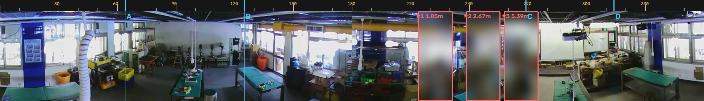
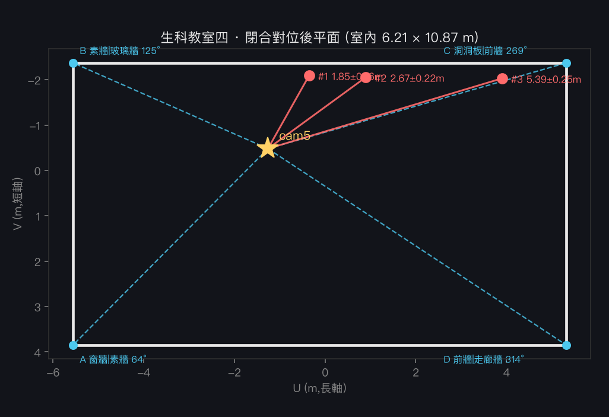
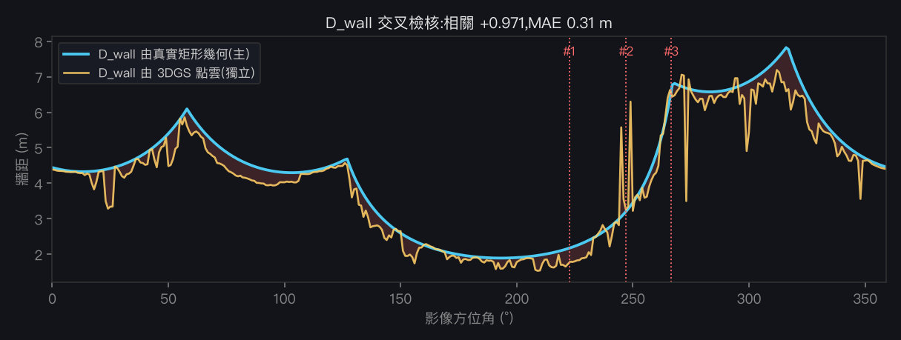

YOLO26 偵測 + 單目深度
把人流定位升級為「方位 × 距離」
把 Ultralytics YOLO26（2026-01 釋出，NMS-free）的偵測與單目深度，接進生科教室四（lt4）既有的 360° 環景人流管線，並用真實上課影像驗證。
2026-08-12 更新：第八節用房間四角後方交會閉合了 world↔image 對位（RMS 3.5°，兩條獨立 D_wall 相關 +0.971），並推翻了第七節的房間尺寸與「相機≈場景原點」假設。
一、YOLO26 效能（Mac · Apple Silicon MPS）
| 模型 | MPS | CPU |
|---|---|---|
| yolo26n 偵測 | 5.0 ms / 201.8 FPS | 6.8 ms / 147 FPS |
| yolo26n-depth 深度 | 4.6 ms / 215.8 FPS | 9.0 ms / 111 FPS |
二、空教室：偵測 + 深度


三、完整 POC：真實上課影像（3 位學生）
素材：攝影機5_20260520_111000@300s（5/20 上課日）。為保護學生隱私，人物已打馬賽克；未打碼原檔僅存本機。


| # | 方位角 → 分區（既有語意） | 距離（深度新增） | 比背景牆近 | conf |
|---|---|---|---|---|
| 1 | 223° · 儲物·作業 | ~8 m（原始） | +1.4 m | 0.82 |
| 2 | 247° · 儲物·作業 | ~8 m | +1.6 m | 0.46 |
| 3 | 267° · 投影機·白板 | ~8 m | +1.7 m | 0.82 |
四、相對既有管線的升級
- 偵測器：mediapipe EfficientDet-lite0 → YOLO26（更準、多類別）。
- 定位：原「方位角分區（徑向靠魚眼幾何、不可靠）」→ 加上 YOLO26-depth 學習式距離，每人得「哪一區 + 多遠」。
- 沿用：既有
lt4_register_params方位角 δ(θ) 對位、lt4_flow分區語意，無縫接上。
五、幾何校正（已做，成功）
原始環景深度是「柔和場」→ 3 人距離都擠在 ~8m、無法分離；簡單的仿射校正實測還會跑出負值而失敗。改用原理性校正：
比值(人/牆)錨定「人在牆前多近」（比絕對深度可靠），幾何牆距提供隨方位變化的真實尺度；相機≈場景原點（經機台距離 1.8–11.1m 驗證合理）。

| # | 分區 | 原始 | 幾何校正後 |
|---|---|---|---|
| 1 | 儲物·作業 | ~8 m | 3.7 m |
| 2 | 儲物·作業 | ~8 m | 4.3 m |
| 3 | 投影機·白板 | ~8 m | 6.0 m |
尚存不確定性：相機位姿為估計值、bbox 牆距略大於實際牆面。要再精確，下一步是從 cam5 實測位姿渲染 3DGS/LiDAR 靜態深度當 ground truth ——已執行，見下節（含誠實結論）。
六、3DGS 靜態深度真校正（已渲染 + 誠實結論）
把 lt4 的 LiDAR/3DGS 壓縮 splat（lt4_lidar_walk.compressed.ply，PlayCanvas 格式、110 萬點）解碼，從估計 cam5 位姿渲染等距柱狀（equirectangular）靜態深度，抽出逐方位角真實牆距 D_wall(θ) 取代原本的 bbox 對角常數。


| 對位線索 | lag | 手性 | corr |
|---|---|---|---|
| 亮度 | 184° | 翻 | 0.46 |
| 過曝(窗) | 29° | 不翻 | 0.35 |
| 藍−紅(日光) | 353° | 翻 | 0.37 |
| 結構邊緣 | 196° | 不翻 | 0.22 |
結論：D_wall 房間輪廓與 cam 位姿可信；但逐人絕對公制距離受全域偏航歧義影響，無法只靠影像↔深度外觀比對定案。要真正精準化，需地標錨點閉合對位——見下節。
七、交叉驗證：實測物件尺寸（⚠ 結論已被第八節修正）
既有 measure_space.py 用天花板 T8 日光燈管（4ft=1.22m 全球標準）當參考物標定 3DGS 場景比例，產出公制平面圖 arch_elements.json：k=0.859 m/單位、室內淨 8.82×10.48m ≈93㎡、牆厚 0.15m、門/黑板/12 燈具、8 件家具足跡（工作檯連排 7.58×1.91m…）。

lt4_lidar_walk 點雲 X 跨距 8.88m ≈ 8.82m（差 <1%），據此宣稱 splat 已是公制。measure_space.py 用軸對齊的牆面密度剖面量房間，但這個房間在 ply 座標中是斜的（約 12.5°），量到的其實是外接矩形而非真實牆距。以 Manhattan frame 重新擬合後，真實室內為 6.21 × 10.87 m（≈67.5㎡），不是 8.82×10.48（≈93㎡）。公制尺度本身仍然成立（見第八節：實測淨高 2.73m 為獨立佐證），但房間尺寸與長寬比被高估，這正是後續對位一直算不通的原因之一。
八、閉合對位（2026-08-12）：從「欠定」到 RMS 3.5°
目標是把影像方位角 ↔ 世界方位角的全域旋轉與手性定死。做法不是拿外觀去對相關（第六節已證實欠定），而是用可在影像中明確指認的房間幾何做後方交會（resection）。
9-1 先修掉兩個上游錯誤
| 錯誤 | 影響 | 修正 |
|---|---|---|
| 房間矩形取自軸對齊密度剖面，但房間在 ply 中斜 12.5° | 量到外接矩形；長寬比 0.84 vs 真實 0.57。用它做對位在幾何上無解（任何室內相機位置都湊不出觀測到的四牆張角） | Manhattan frame 擬合 → 真實 6.21 × 10.87 m、淨高 2.73 m |
render_depth_pano.py 取 camY = percentile(Y,2) + 2.75 | y-down 場景中地板在大 y 側，這個式子把相機放到了地板側（y=+1.17，地板 y=+1.40），而非天花板（y≈−1.33） | 改為天花板下方 10 cm；仰角帶篩選才選到正確的牆面點 |
9-2 四個房間角落 → 後方交會
在環景中逐一指認四個牆與牆的轉角（比家具可靠：家具會移動、輪廓模糊，牆角是建築固定件）：
| 角落 | 影像方位角 | 指認依據 | 殘差 |
|---|---|---|---|
| A | 64° ±4° | 窗牆 → 素白牆（鑽床列所在） | −6.0° |
| B | 125° ±3° | 素白牆 → 玻璃隔間牆 | +2.0° |
| C | 269° ±2° | 洞洞板工具牆 → 前牆（布幕/白板） | −1.9° |
| D | 314° ±2° | 前牆 → 走廊窗牆 | +2.5° |

手性 = 鏡射（world_az = −image_az + 13.2°）；相機在房間座標 U=−1.26, V=−0.48 m，即離四面牆 4.30 / 6.58 / 1.89 / 4.32 m。
順帶推翻先前「相機 ≈ 場景原點」的假設——它其實明顯偏向一面長牆（僅 1.89 m）。

9-3 驗證：兩條獨立求得的 D_wall 是否吻合
對位是否真的閉合，最強的檢核是拿兩個彼此獨立的來源算同一個量：
① 由真實矩形幾何從解出的相機位置射線求交；② 由3DGS 點雲在同一位姿下逐方位角取穩健牆距。兩者若無關，曲線不會重合。

9-4 重算三位學生的絕對距離
| # | 影像方位角 | 分區 | D_wall（新） | 先前（bbox 常數） | 閉合對位後 |
|---|---|---|---|---|---|
| 1 | 222.6° | 儲物·作業 | 2.17 m | 3.7 m | 1.85 ± 0.16 m |
| 2 | 247.1° | 儲物·作業 | 3.21 m | 4.3 m | 2.67 ± 0.22 m |
| 3 | 266.5° | 投影機·白板 | 6.59 m | 6.0 m | 5.39 ± 0.25 m |
±值為蒙地卡羅（300 次）傳播四個角落標定不確定度（±2–4°）的 1σ。先前 3.7/4.3/6.0 m 是用被高估的 bbox 牆距算的，前兩人被高估約 1.6–1.9 m。
9-5 誠實標明：還沒解決的部分
比值法
true = D_wall × (人深度/背景深度) 中，YOLO26-depth 在環景上是柔和場，三人的比值分別是 0.850 / 0.833 / 0.819——幾乎相同。也就是說「誰比較遠」實際上是 D_wall(方位角) 決定的，不是深度模型決定的。方位角現在很準；徑向仍只是「牆距的固定比例」。天花板相機本可用腳點俯角測距
r = h/tan(β)。但三人的偵測框下緣是 247.4 / 248.0 / 246.8（影像高 248）——腳全部被切在畫面底邊之外。這個環景是「環帶」去扭曲，不含正下方視野，近處物體的底部不在圖內。因此腳點法與像素身高法在這一幀都不可用（自洽解會塌到 0.3–0.4 m 的荒謬值，且 row0 撞邊界）。另外嘗試用點雲渲染去擬合垂直角度範圍，相關僅 0.049（渲染 40% 破洞，無訊號）——一併記錄為失敗嘗試。
相機接近長軸中點，使矩形的 D_wall 幾乎 180° 對稱，純幾何無法分辨；影像端任何檢核都分不出來（兩解在影像空間完全等價），只能靠點雲端證據。五項獨立檢核中 3 項支持採用解：黃色管樑位置（91% 落在該面牆，且角度跨度 119° 預測 vs 111° 觀測）、走廊牆立面呈整排規則窗帶、彩色收納籃置物架集中在最近牆（2.1×）；2 項反向（牆外點數、藍色佔比）但兩者都有明確混淆源（玻璃隔間外的另一室內空間、藍色不只出現在門）。
若這 180° 判斷錯了，三人的距離數字會互換到對稱方位——方位角語意分區會整組相反。這是目前最大的單一風險。
九、pibook Hailo？
pibook 有 Hailo-8（26 TOPS），但現有 .hef 只到 YOLOv5/6/8/x、沒有也難編 YOLO26（需 x86 DFC、新 NMS-free/depth 架構支援未定），且 Hailo 正被現役 camera_hub 佔用。要 Hailo 加速偵測，現實選擇是沿用 YOLOv8s。